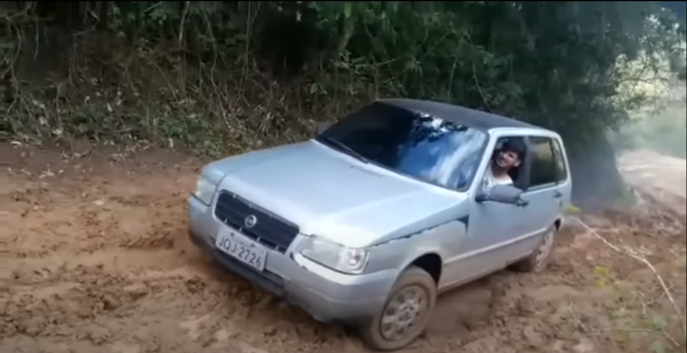

Conheça o FIAT UNO e seu sitema 4x4 invisível.
Nem os engenheiros sabem como fizeram isso.
"Você me diz onde começamos, para onde vamos, para onde vamos depois.
Dou-lhe cinco minutos quando chegarmos lá.
Qualquer coisa acontecer nesses cinco minutos e eu sou seu. Não importa o que.
Qualquer coisa por um minuto de cada lado disso e você estará sozinho.
Eu não fico sentado enquanto você está analisando.
Eu não carrego arma.
Eu dirijo."
~Driver